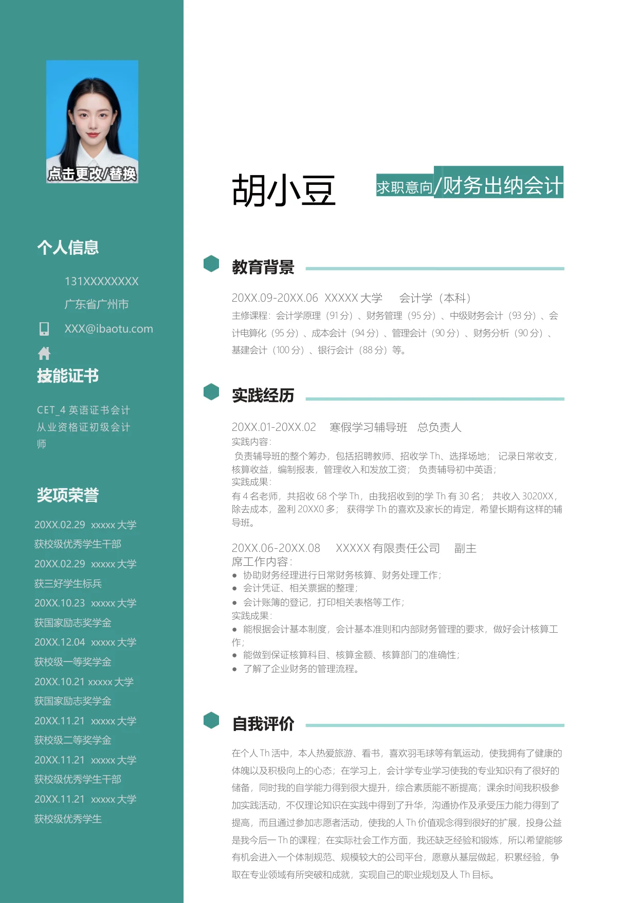

胡小豆
求职意向
/财务出纳会计
教育背景
20XX.09-20XX.06
XXXXX 大学
会计学（本科）
主修课程：会计学原理（91 分）、财务管理（95 分）、中级财务会计（93 分）、会
计电算化（95 分）、成本会计（94 分）、管理会计（90 分）、财务分析（90 分）、
基建会计（100 分）、银行会计（88 分）等。
实践经历
20XX.01-20XX.02 寒假学习辅导班 总负责人
实践内容：
负责辅导班的整个筹办，包括招聘教师、招收学Th、选择场地； 记录日常收支，
核算收益，编制报表，管理收入和发放工资； 负责辅导初中英语；
实践成果：
有4 名老师，共招收68 个学Th，由我招收到的学Th 有30 名； 共收入3020XX，
除去成本，盈利20XX0 多； 获得学Th 的喜欢及家长的肯定，希望长期有这样的辅
导班。
20XX.06-20XX.08
XXXXX 有限责任公司
副主
席工作内容：
●协助财务经理进行日常财务核算、财务处理工作；
●会计凭证、相关票据的整理；
●
会计账簿的登记，打印相关表格等工作；
实践成果：
●
能根据会计基本制度，会计基本准则和内部财务管理的要求，做好会计核算工
作；
●能做到保证核算科目、核算金额、核算部门的准确性；
●了解了企业财务的管理流程。
自我评价
在个人Th 活中
，本人热爱旅游、看书，喜欢羽毛球等有氧运动，使我拥有了健康的
体魄以及积极向上的心态；在学习上，会计学专业学习使我的专业知识有了很好的
储备，同时我的自学能力得到很大提升，综合素质能不断提高；课余时间我积极参
加实践活动，不仅理论知识在实践中得到了升华，沟通协作及承受压力能力得到了
提高，而且通过参加志愿者活动，使我的人Th 价值观念得到很好的扩展，
投身公益
是我今后一Th 的
课程；在实际社会工作方面，我还缺乏经验和锻炼，所以希望能够
有机会进入一个体制规范、规模较大的公司平台，愿意从基层做起，积累经验，争
取在专业领域有所突破和成就，实现自己的职业规划及人Th 目标。
个人信息
131XXXXXXXX
广东省广州市
XXX@ibaotu.com
技能证书
CET_4
英语证书会计
从业资格证初级会计
师
奖项荣誉
20XX.02.29 xxxxx 大学
获校级优秀学生干部
20XX.02.29 xxxxx 大学
获三好学生标兵
20XX.10.23 xxxxx 大学
获国家励志奖学金
20XX.12.04 xxxxx 大学
获校级一等奖学金
20XX.10.21 xxxxx 大学
获国家励志奖学金
20XX.11.21 xxxxx 大学
获校级二等奖学金
20XX.11.21 xxxxx 大学
获校级优秀学生干部
20XX.11.21 xxxxx 大学
获校级优秀学生